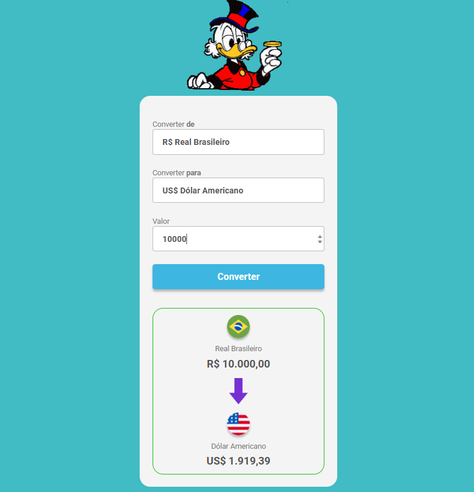
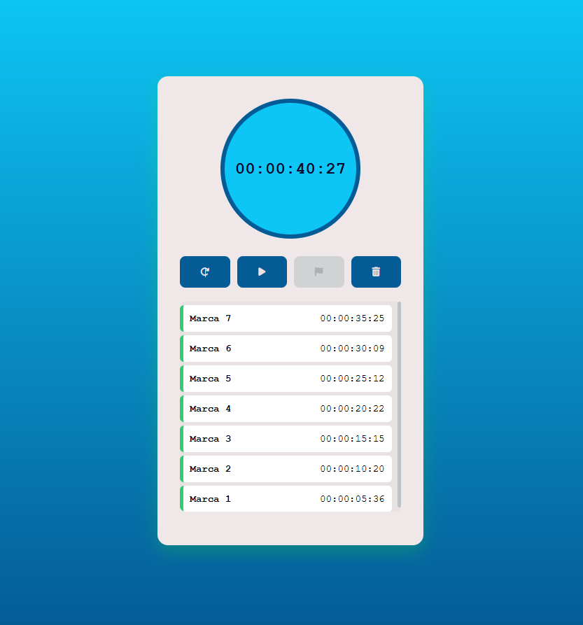
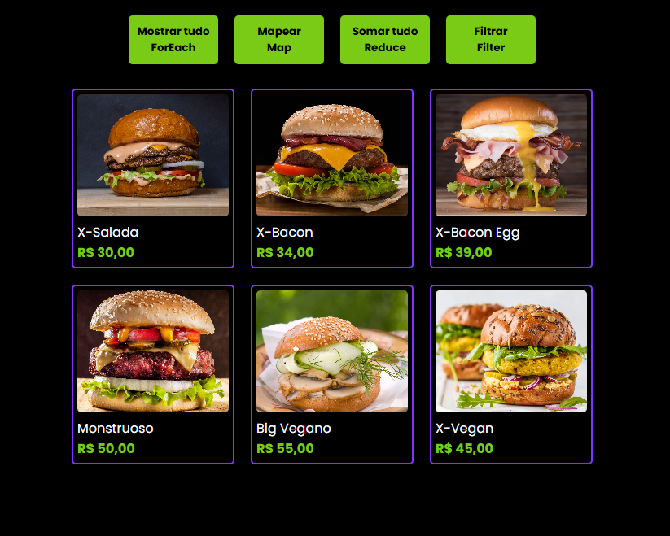
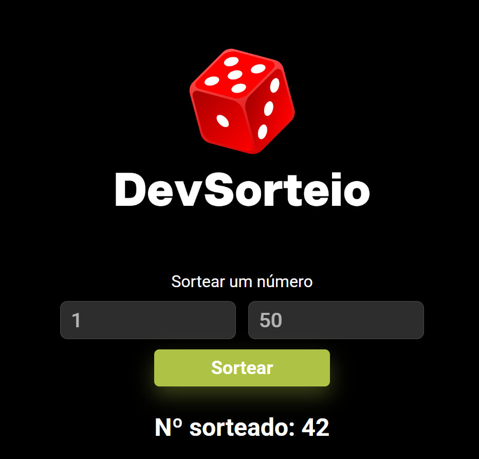
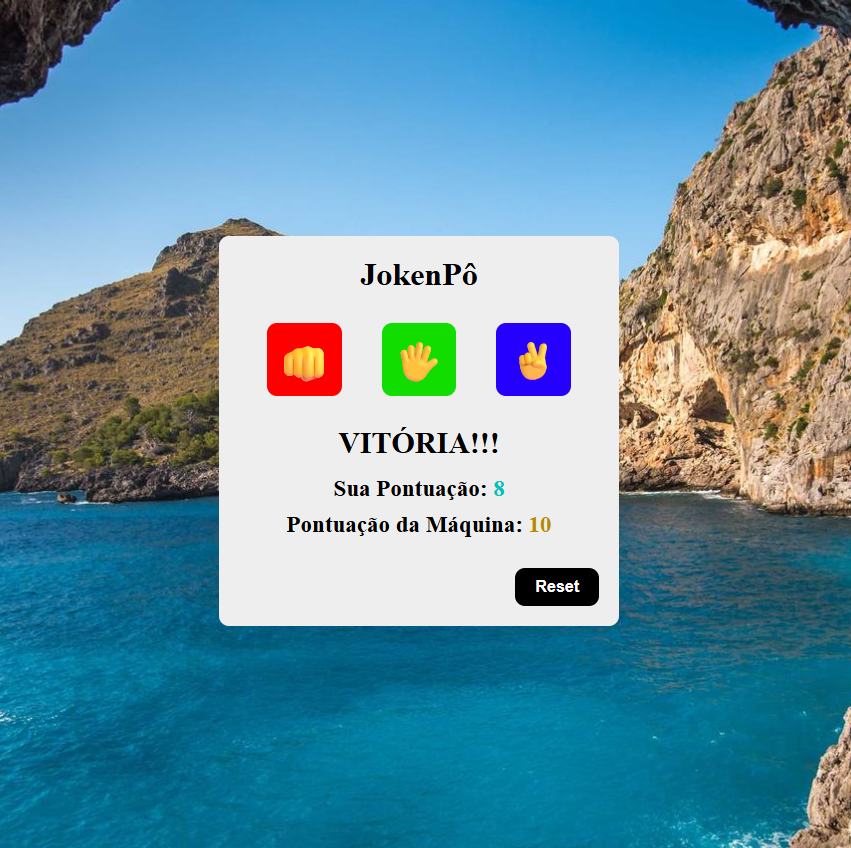
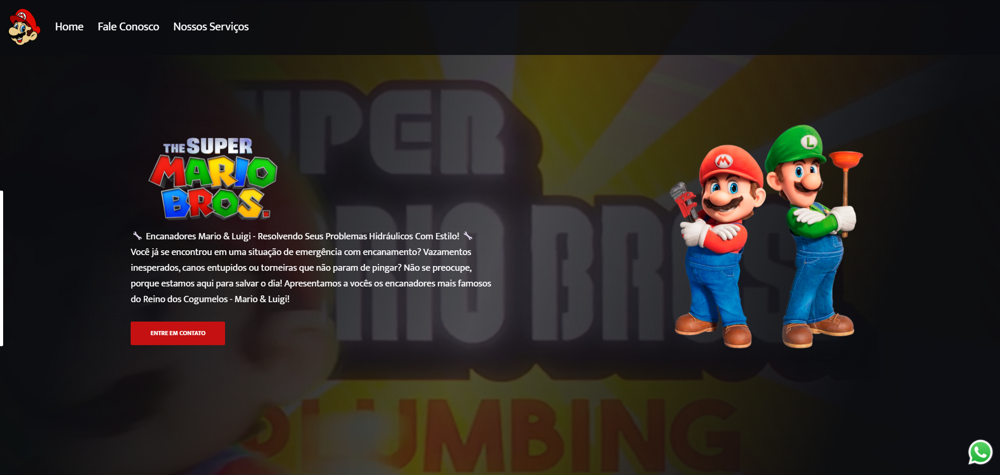
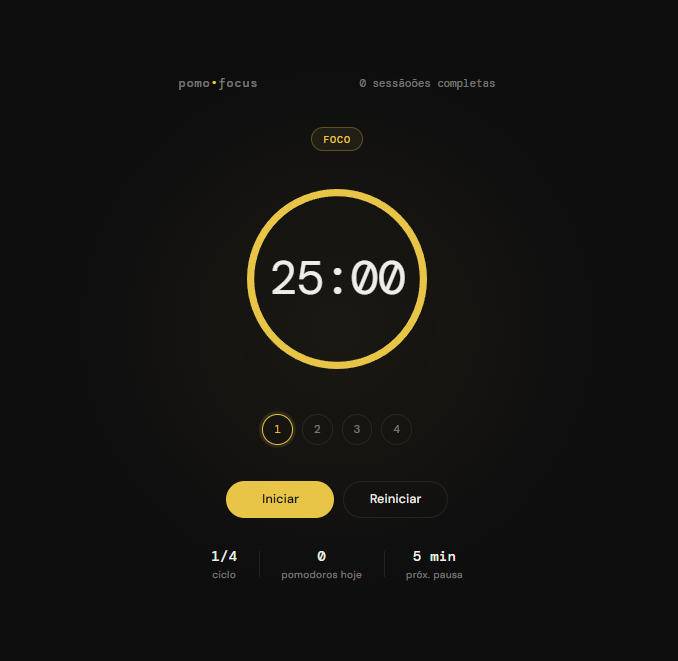
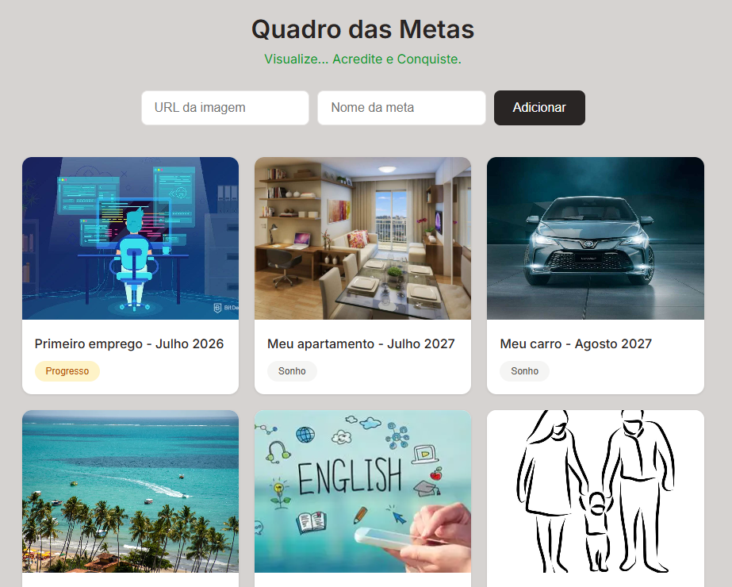

Sobre mim
Sou um desenvolvedor front-end apaixonado por criar experiências digitais envolventes e intuitivas. Com uma sólida formação em HTML, CSS e JavaScript, estou sempre buscando aprimorar minhas habilidades e aprender novas tecnologias para entregar projetos de alta qualidade. Meu objetivo é transformar ideias em realidade, criando interfaces que sejam não apenas visualmente atraentes, mas também funcionais e acessíveis para todos os usuários.
Meus projetos

Conversor de moedas
Um aplicativo web que permite aos usuários converter moedas entre diferentes pares de moedas.
Ver projeto




Mario e Luigi
Uma landing page com o tema dos personagens do jogo Mario feita com HTML, CSS e JavaScript.
Ver projeto
Pomodoro
Um aplicativo web que permite aos usuários gerenciar o tempo de estudos e descanso usando a técnica Pomodoro.
Ver projeto